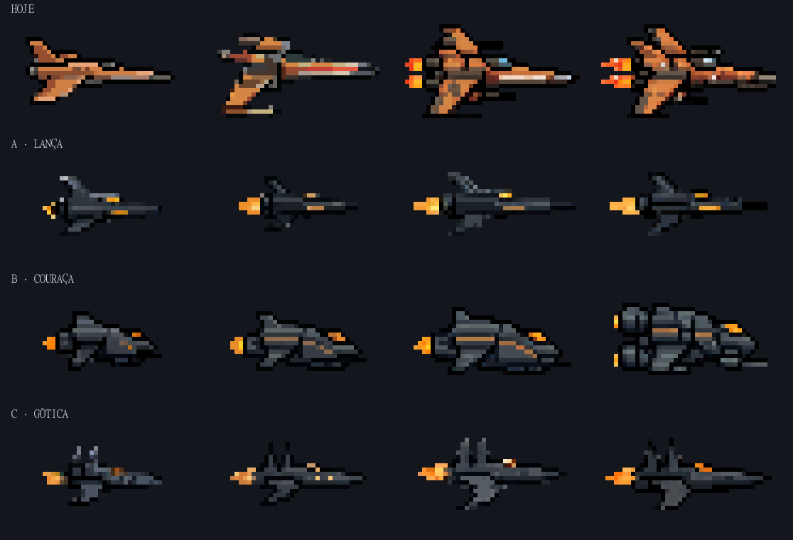
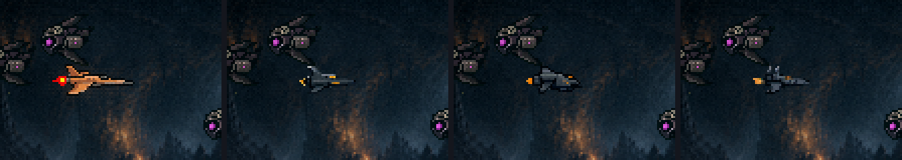
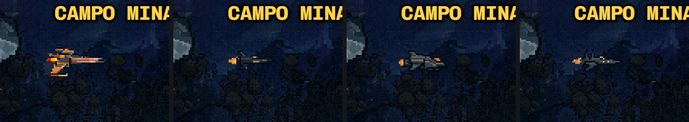
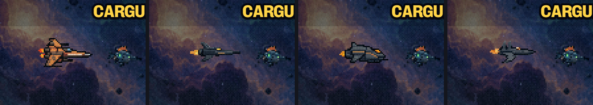
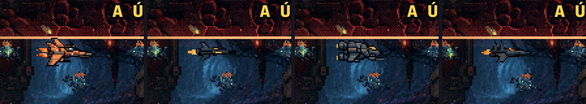

As naves humanas novas · rodada 1
22–23/10/2026 · ← os ajustes de 22/10 (a análise das naves, §4) · → a Gótica refeita em escada (rodada 1b) ·Três direções de desenho, cada uma com a família inteira (T0 → T3), de perfil, no tamanho final, casco grafite e âmbar só onde há energia. Plantadas no jogo de verdade, cada tier na sua fase. Nada instalado; a hitbox (21×9) não muda.
As três famílias

- A · Lança: o interceptador. Agulha longa, cabine na frente, asa embaixo, deriva em cima. A T3 ganha a segunda linha âmbar e o canhão no nariz. A mais elegante, e a mais fina: é a que menos se lê no escuro (veja a F1 e a F2 abaixo).
- B · Couraça: a canhoneira blindada. Uma cunha de placas inclinadas, a linha âmbar no flanco. A T3 vira outra coisa: dois motores empilhados e mais placa. A que melhor se lê em qualquer fundo (a massa cinza), e a de evolução mais clara; é a mais "pesada" para um protagonista de shmup.
- C · Gótica: a arquitetura da colônia (as cidadelas góticas das suas pinturas) virando caça. Torres no dorso como as da catedral, uma asa em lâmina curvada para baixo. As torres vão de duas para três na T3. A de identidade mais própria: nenhuma outra nave do jogo tem essa silhueta.
As medidas (o desenho, sem a margem)
| T0 | T1 | T2 | T3 | |
|---|---|---|---|---|
| Hoje | 35×16 | 38×20 | 41×22 | 41×22 |
| A · Lança | 28×14 | 28×13 | 38×15 | 37×15 |
| B · Couraça | 28×14 | 32×14 | 37×16 | 36×17 |
| C · Gótica | 28×14 | 32×15 | 35×17 | 39×17 |
A altura cai de 22 para 15–17 px na T3 (−23% a −32%): é ela que aperta a travessia. Os tamanhos ainda não estão alinhados degrau a degrau (na Lança, a T1 é do tamanho da T0 e a T2 é mais comprida que a T3): a rodada 2 acerta isso na direção escolhida.
No jogo (cada tier na fase em que ele voa; o tratamento de imagem da fase por cima, como na nave de verdade)




Como saíram (o caminho)
- PixelLab Pro, com o estilo da
ship-cinza(a FANTASMA do róster antigo: casco grafite, perfil, 30×16) sem forçar a paleta dela. Primeiro uma nave-âncora (a T2) de cada direção, entre 64 candidatas; depois T0, T1 e T3 com a âncora como referência de forma (é o que prende a família). - Toda candidata aberta ampliada antes de entrar. Fora: as vistas de cima (simétricas), as com cacos soltos (seis pixels tirados da T1 da Lança).
- Uma terceira direção caiu antes da folha: a "nave da colônia" (casco arredondado) saiu como cápsula, um tubo com um anel, e virou a Gótica. A primeira leva da T0 da Lança saiu borrada e maior que a T1 (refeita); a leva da T3 da Couraça saiu cópia da T2 (a T3 é a candidata de dois motores da leva da âncora).
- As 64 candidatas de cada tier estão em
naves/cru/, se quiser outra.
O que você decide
- A direção: A, B ou C, ou uma mistura (por exemplo, a Gótica com os dois motores da T3 da Couraça). A minha escolha é a C · Gótica: liga a nave à colônia das suas pinturas, tem a silhueta mais própria, lê bem em todas as fases e a família evolui clara.
- O tamanho: se a T3 com 15–17 px de altura está boa, ou menor ainda.
- Depois disso, a rodada 2: os tamanhos alinhados, os retoques que você pedir, e as chamas animadas.